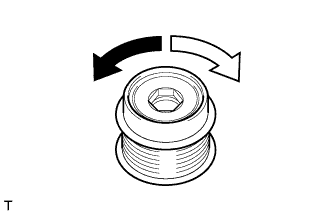
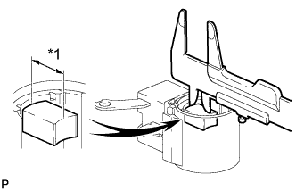
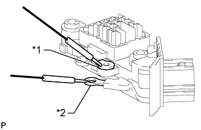
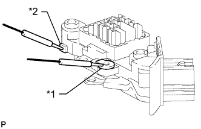
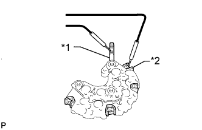
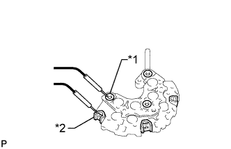
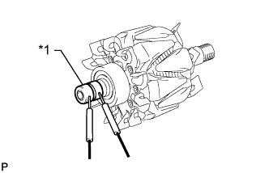
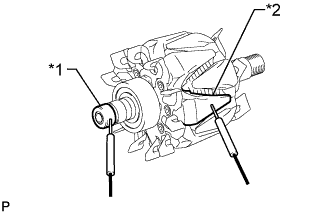
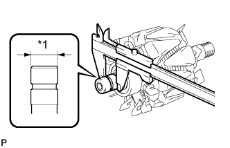

ГЕНЕРАТОР (типа 80 A) > ПРОВЕРКА |
| 1. ПРОВЕРЬТЕ ШКИВ ГЕНЕРАТОРА С МУФТОЙ |
|  |
Удерживая центр шкива генератора с муфтой, убедитесь, что наружное кольцо поворачивается против часовой стрелки и не поворачивается по часовой стрелке.
 | Разблокировка |
 | Блокировка |
| 2. ПРОВЕРЬТЕ ЩЕТКОДЕРЖАТЕЛЬ ГЕНЕРАТОРА В СБОРЕ |
|  |
Измерьте длину щетки штангенциркулем.
| *1 | Длина |
| 3. ПРОВЕРЬТЕ РЕГУЛЯТОР ГЕНЕРАТОРА В СБОРЕ |
|  |
Измерьте сопротивление в соответствии со значениями, приведенными в таблице ниже.
| Контакты для подключения диагностического прибора | Условие | Заданные условия |
| Контакт F - контакт B | Всегда | Менее 1 Ом или более 10 кОм |
| *1 | Контакт F |
| *2 | Контакт B |
|  |
Измерьте сопротивление в соответствии со значениями, приведенными в таблице ниже.
| Контакты для подключения диагностического прибора | Условие | Заданные условия |
| Контакт F - контакт E | Всегда | Менее 1 Ом или более 10 кОм |
| *1 | Контакт F |
| *2 | Контакт E |
| 4. ПРОВЕРЬТЕ ДЕРЖАТЕЛЬ ГЕНЕРАТОРА С ДИОДНЫМ МОСТОМ |
Проверьте положительную (+) часть диодного моста.
|  |
Подключите один щуп омметра к положительному (+) выводу, а другой - к каждому из контактов диодного моста.
| *1 | Положительный (+) вывод |
| *2 | Контакт выпрямителя |
Поменяйте полярность щупов измерительного прибора и повторите описанную выше процедуру.
Убедитесь, что при одной полярности прибор показывает сопротивление ниже 1 Ом, а при другой - выше 10 кОм.
Если результат проверки не отвечает требованиям, замените держатель генератора с диодным мостом.
Проверьте отрицательную (-) часть диодного моста.
|  |
Подсоединяйте один щуп омметра к отрицательному (-) выводу, а другой - к каждому контакту выпрямителя.
| *1 | Отрицательный (-) вывод |
| *2 | Контакт выпрямителя |
Поменяйте полярность щупов измерительного прибора и повторите описанную выше процедуру.
Убедитесь, что при одной полярности прибор показывает сопротивление ниже 1 Ом, а при другой - выше 10 кОм.
Если результат проверки не отвечает требованиям, замените держатель генератора с диодным мостом.
| 5. ПРОВЕРЬТЕ РОТОР ГЕНЕРАТОРА В СБОРЕ |
Проверьте, нет ли обрыва цепи в роторе генератора.
|  |
Измерьте сопротивление в соответствии со значениями, приведенными в таблице ниже.
| Контакты для подключения диагностического прибора | Условие | Заданные условия |
| Токосъемное кольцо - токосъемное кольцо | 20°C (68°F) | 1,7–2,1 Ом |
| *1 | Токосъемное кольцо |
Проверьте, соединен ли ротор генератора с массой.
|  |
Измерьте сопротивление в соответствии со значениями, приведенными в таблице ниже.
| Контакты для подключения диагностического прибора | Условие | Заданные условия |
| Токосъемное кольцо - сердечник ротора | Всегда | 10 кОм или более |
| *1 | Токосъемное кольцо |
| *2 | Сердечник |
Проверьте токосъемные кольца.
Убедитесь, что токосъемные кольца не имеют шероховатостей и задиров.
Если на токосъемных кольцах есть шероховатости или задиры, замените ротор генератора в сборе.
|  |
Измерьте диаметр токосъемных колец штангенциркулем.
| *1 | Диаметр |